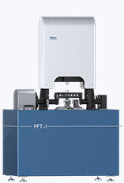
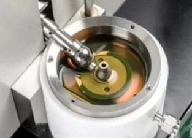
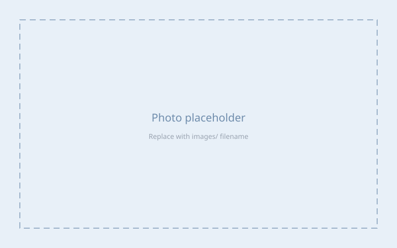

原子間力顕微鏡（AFM）
固体表面および潤滑環境下の界面における地形，摩擦力，粘弾性などをナノスケールで評価します。
主な用途：固液界面計測，ナノ摩擦，表面観察
ナノ界面計測から摩擦試験，表面分析まで，実験と評価を一体的に行える設備体制です。
東京工業高等専門学校内の光学顕微鏡・レーザ顕微鏡と組み合わせ，摩擦・摩耗試験から表面観察・組織評価まで一括して摩擦・摩耗特性の評価が可能です。
固体表面および潤滑環境下の界面における地形，摩擦力，粘弾性などをナノスケールで評価します。
主な用途：固液界面計測，ナノ摩擦，表面観察

一定または変動する接触条件下での摩擦係数，摩耗量，表面状態の変化を評価します。
主な用途：摩擦・摩耗試験，潤滑特性評価

ローリング・スライディング接触におけるトラクション特性，油膜形成，境界・混合・流体潤滑領域の評価に用います。
主な用途：ギア・ベアリング関連潤滑，EHL評価

真空または制御雰囲気下での摩擦・摩耗挙動を測定し，環境の影響を評価します。
主な用途：真空・低湿環境下の摩擦，表面反応の評価
摩擦・摩耗試験や表面分析に向けた試料表面の研磨・仕上げを行います。
主な用途：試料作製，表面仕上げ
東京工業高等専門学校 産業技術センターの共同利用設備を含みます。一覧は 共同利用設備（東京高専 産業技術センター） をご参照ください。
試験荷重：0.5 μN～2,000 mN（低荷重・高荷重ユニット）／ISO 14577-1・JIS Z 2255 準拠
薄膜，極表面，微小領域の押し込み硬さ・弾性率などをナノインデンテーション法で評価します。荷重–変位曲線の解析により，圧痕観察なしで機械的特性を求められます。
メーカー：アルバック・ファイ（株）／型式：PHI X-tool／導入：平成26年3月
固体試料表面（数 nm）の元素種と化学結合状態を分析します。アルゴンガスエッチングによる深さ方向プロファイル測定も可能です。
主な利用例
メーカー：FEI / OXFORD INSTRUMENTS／型式：Quanta 250 FEG / x-act／導入：平成22年
最大約100万倍の高分解能観察（静止画・動画）が可能です。試料を −20～1,500 ℃で加熱・冷却したり，低真空（～2,700 Pa）・水蒸気環境下での観察など，多様な条件に対応します。元素分析（EDX）も利用できます。
主な利用例
共同研究・連携先の装置を用いた計測・分析について，内容に応じてご相談ください。
微細組織・界面構造の観察など，内容に応じてご相談ください。
試料断面の作製や局所加工など，内容に応じてご相談ください。
表面分析（XPS）の共同利用・相談可
こちらを用いた研究を実施中です。